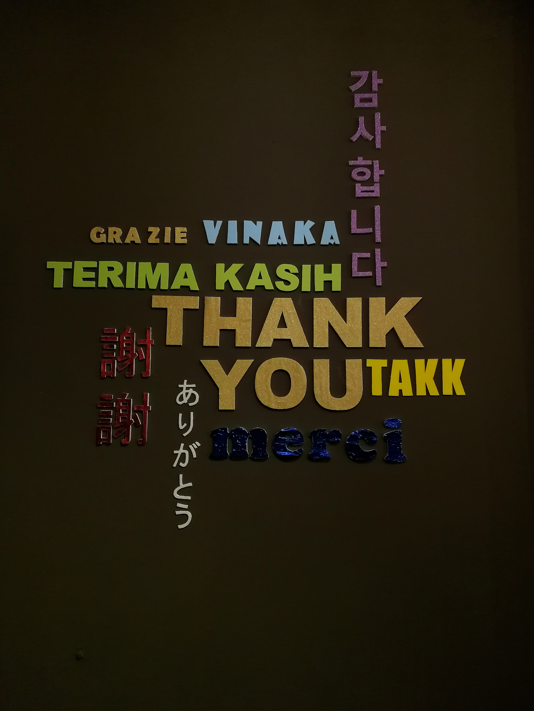

Welcome to my site!!
welcome everyone!
반갑습니다, 여러분
흉흉하고 팍팍한 세상 속에서 문과 출신이 어떻게든 살아남아보려고
취미생활 겸 자기계발을 목표로 웹사이트 만들기를 시도해보고 있습니다.
아직 많이 부족하지만 귀엽게 봐주시고 조언 및 피드백 언제든지 환영입니다.
주제를 무엇으로 할지, 이걸 만들어서 뭐할지 등의 방향성은 아직 고민중입니다.
주제 추천 받음.
공부해나가면서 지속적으로 추가 및 수정해나갈 예정이므로
여러분의 작은 관심 하나하나가 저에게 큰 도움이 됩니다.
